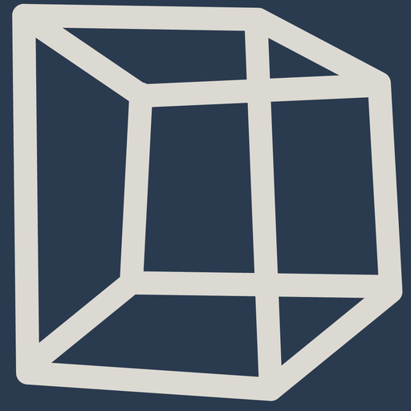

Moduli singoli e corsi specialistici – prenotabili indipendentemente dal ciclo di formazione. Per gli specialisti che vogliono sviluppare una competenza mirata e per le aziende che vogliono far crescere il proprio team.
Ambiti specialistici
Cinque ambiti raggruppano l'intera offerta di corsi.
Misurazione ufficiale, punti fissi, tecniche di acquisizione e topografia ingegneristica.
Modellazione di geodati, analisi, pubblicazione e infrastrutture di geodati.
Nuvole di punti, telerilevamento, modellazione e visualizzazione.
Competenze metodologiche per il lavoro di progetto, di squadra e con i clienti.
Basi informatiche, amministrazione e automazione nell'ambito della geomatica.
Prossime edizioni

Corso S8-26 Telerilevamento alpino Corso singolo Mobile mapping con tecnologia SLAM Corso singolo Ricostruire digitalmente oggetti 3D da immaginiOgni corso riprende l'immagine guida del suo modulo – la superficie del riquadro corrisponde al colore dell'immagine (moduli di base greige, moduli a scelta Secondary Navy). In esercizio questo elenco è alimentato dalla banca dati degli eventi e può essere filtrato per ambito, data, luogo e lingua.
Per i datori di lavoro e i formatori
Il perfezionamento presso BIZ Geo è pensato per la quotidianità della geomatica svizzera – da specialisti della pratica, per la pratica.
Date modulari, pianificabili accanto all'attività quotidiana.
I moduli contribuiscono all'attestato professionale federale.
Contributi federaliper la preparazione all'esame di professione.
Offerte in tutte le regioni linguistiche della Svizzera.